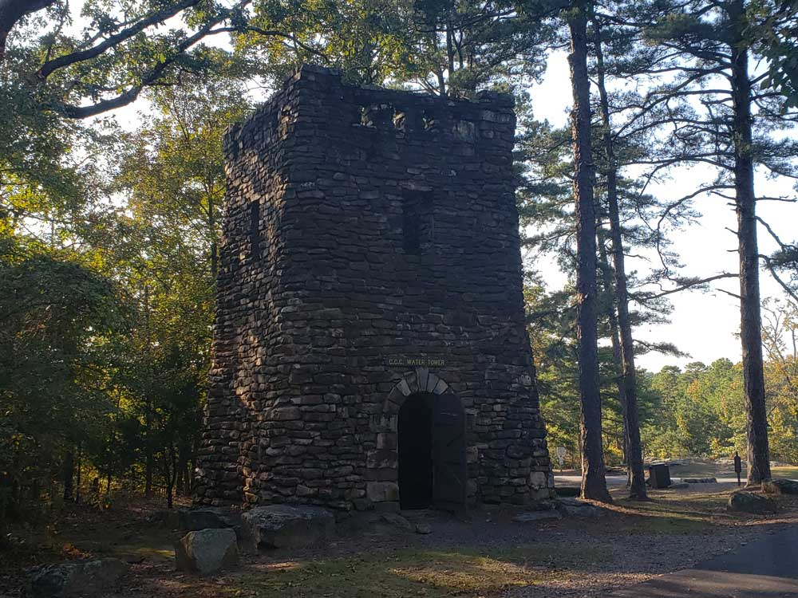
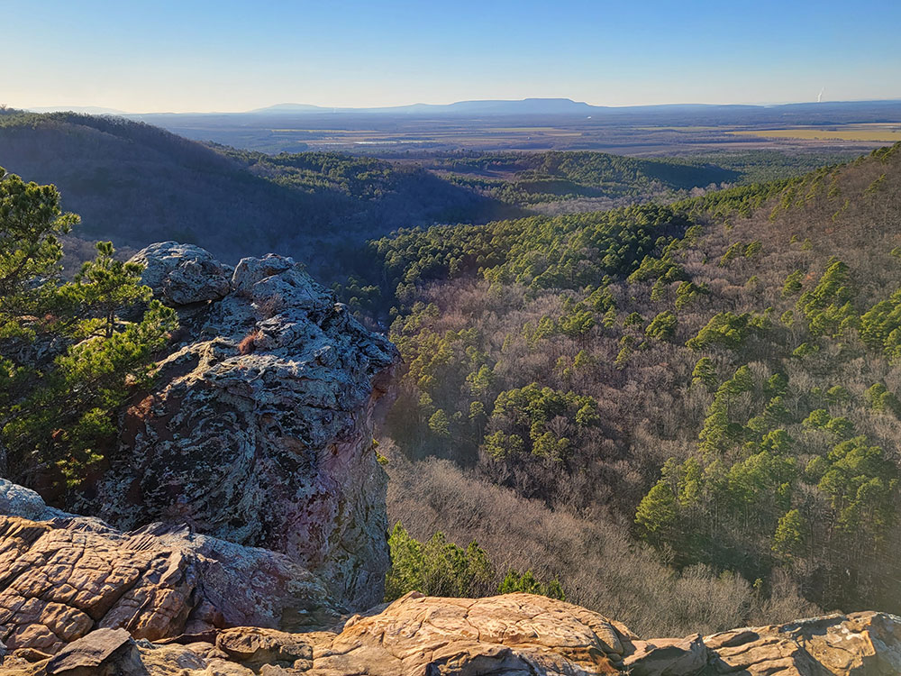
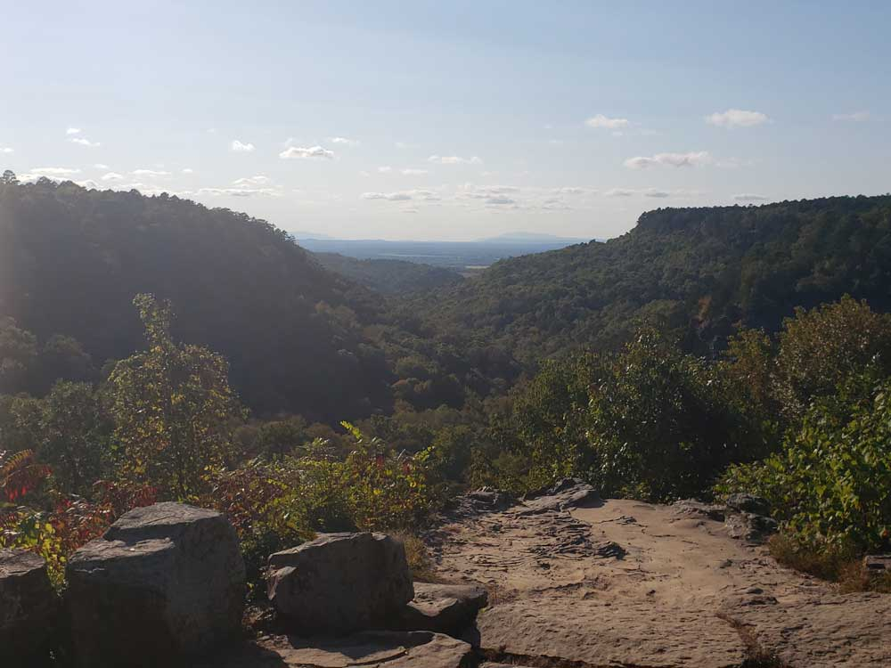
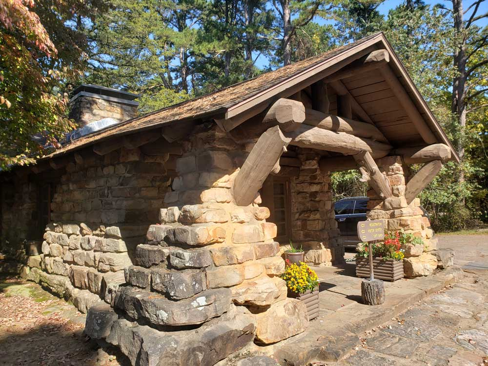
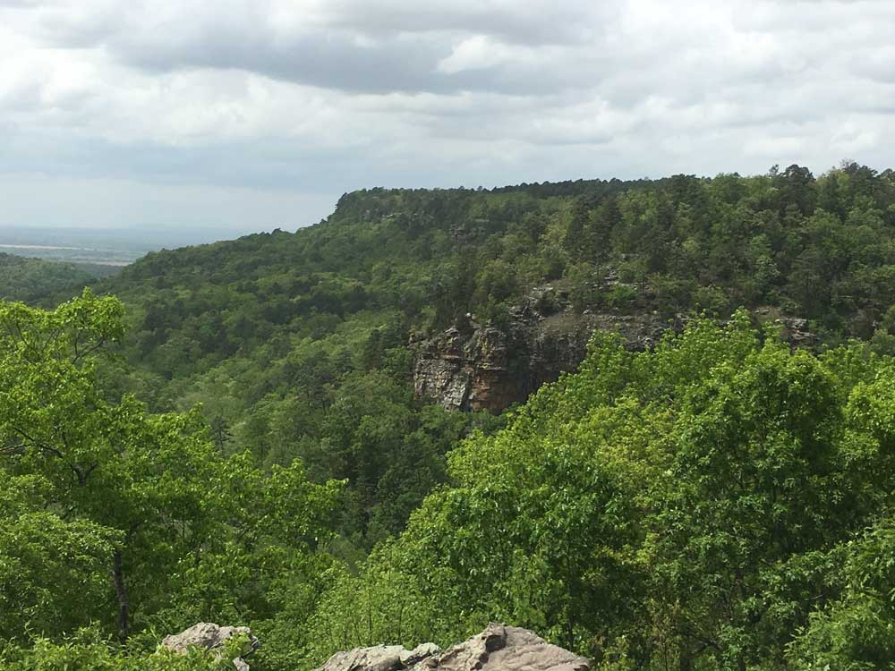

3,471-acre park located atop Petit Jean Mountain adjacent to the Arkansas River in the area between the Ouachita Mountains and Ozark Plateaus
General Information
Visitor Center and Park Office: 8:00am to 5:00pm daily
Some facilities and seasonal amenities operate on varying schedules
Hiking trails and scenic overlooks: Free
Fees apply for camping, lodging, swimming pools, boat rentals, and certain park activities
How to Get There
From Morrilton (10 mi): Take AR-9 south from Morrilton for approximately 9 miles, turn right onto AR-154 west, continue about 12 miles up Petit Jean Mountain, and follow signs to Petit Jean State Park.
Overview
Petit Jean State Park is Arkansas's first state park, a 3,471-acre park atop Petit Jean Mountain between the Ouachita Mountains and the Ozark Plateau. It is named for a legendary French girl who disguised herself as a cabin boy and is said to be buried on the mountain. The park is known for the 95-foot Cedar Falls, Mather Lodge, rustic stone and log buildings built by the Civilian Conservation Corps in the 1930s, and a network of trails to caves, rock formations and overlooks. People come to hike, camp, swim and paddle and to stay at one of the most beloved lodges in the state.
Access
The park is about 10 miles from Morrilton, in central Arkansas, and about 65 miles northwest of Little Rock. From Morrilton, visitors take AR-9 south and then AR-154 west about 12 miles up the mountain. The road is paved but winding. Nearly all visitors arrive by car, and parking is available at trailheads and the lodge. There is no public transportation.
Seasons
The park is open year-round. Spring brings the strongest waterfalls and wildflowers, summer is popular for swimming and boating but hot, and fall has bright foliage. Winter is quiet, with frost and sometimes frozen falls, and some facilities close. Rain can swell Cedar Falls, while dry periods in late summer reduce the flow. Trails can be slippery in wet weather.
Things to Do
See Cedar Falls
The 95-foot waterfall drops into a canyon and is reached by a scenic trail or viewed from an overlook.
Hike to Caves and Rock Formations
Bear Cave, Rock House Cave, the Grotto, Turtle Rocks, Carpet Rocks and the Natural Bridge show how erosion shaped the sandstone.
Stay at Mather Lodge
The 24-room CCC-built lodge sits on the edge of a canyon and offers views, dining and a classic state park atmosphere.
Swim, Paddle and Fish at Lake Bailey
The 100-acre lake offers pedal boats, canoes and fishing, with a boathouse for rentals.
Enjoy the Overlooks
Scenic overlooks, including the one at Petit Jean's grave, look out over the Arkansas River valley.
Top Trails
Cedar Falls Trail
Length: Approximately 2 miles round trip
Elevation Gain: Approximately 300 feet
Difficulty: Moderate
This National Recreation Trail descends from the Mather Lodge area into Cedar Creek Canyon to the base of the waterfall. It includes steep stairs and can be slippery.
Seven Hollows Trail
Length: Approximately 4.5 miles loop
Elevation Gain: Approximately 400 feet
Difficulty: Moderate
This trail passes Bear Cave, Rock House Cave and the Grotto and explores rock formations in a quiet hollow.
Visitor Centers
The park visitor center and gift shop in the center of the park provide exhibits, trail maps, interpretive programs and information about the CCC buildings and natural history. Park interpreters offer guided hikes and programs through the year. The visitor center and park office are open daily from 8 a.m. to 5 p.m.
Camping and Lodging
The park has the 24-room Mather Lodge, 32 cabins and 127 campsites, which can be reserved through Arkansas State Parks. Visitors can also stay in Morrilton, about 10 miles away, with hotels and restaurants, or in Conway, about 35 miles southeast, and Russellville, about 30 miles west. Little Rock is about 65 miles away and offers the widest range of hotels.
This article uses material from the Wikipedia articles and official tourism pages for Petit Jean State Park, which are released under the Creative Commons Attribution-Share-Alike License 3.0. Additional information from Arkansas State Parks.
Featured Trails
Bear Cave Trail
1.1 miles loop, 124 feetShort loop trail winding through massive sandstone formations, narrow passageways, rock shelters, and scenic overlooks shaped by centuries of natural erosion.
Cedar Creek Trail
1.2 miles loop, 206 feetHistoric creekside loop trail featuring forested canyon scenery, rocky bluffs, stone steps, small cascades, and picturesque views above a renowned waterfall gorge.
Cedar Falls Trail (National Recreation Trail)
1.9 miles roundtrip, 367 feetScenic canyon trail descending through rugged woodlands and sandstone bluffs to a dramatic 95-foot waterfall cascading into a natural basin.
Rock House Trail
1.9 miles roundtrip, 367 feetModerately challenging woodland trail featuring massive sandstone formations, scenic overlooks, rock shelters, historic Civilian Conservation Corps structures, and a distinctive cave-like rock house.
Seven Hollows Trail
4.4 miles loop, 564 feetModerate loop trail traversing a series of forested hollows filled with sandstone bluffs, rock shelters, a natural stone arch, prehistoric sites, and a secluded grotto waterfall.




